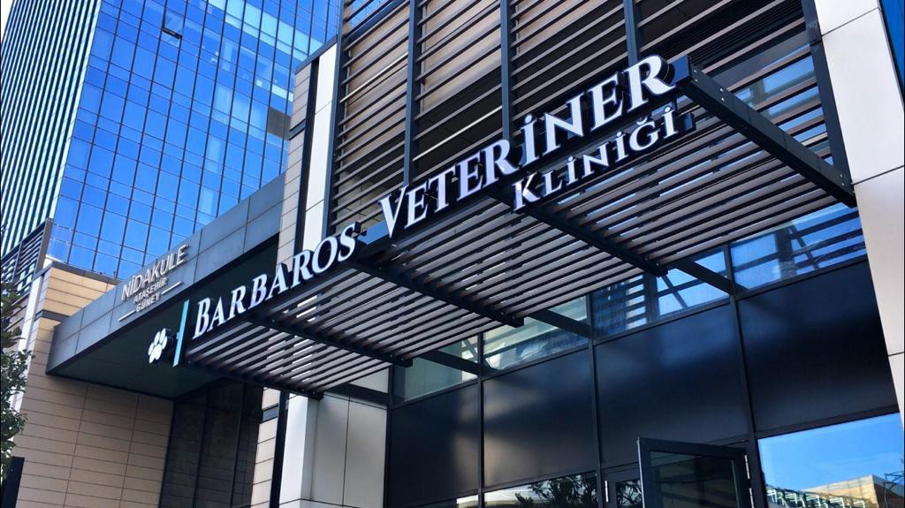
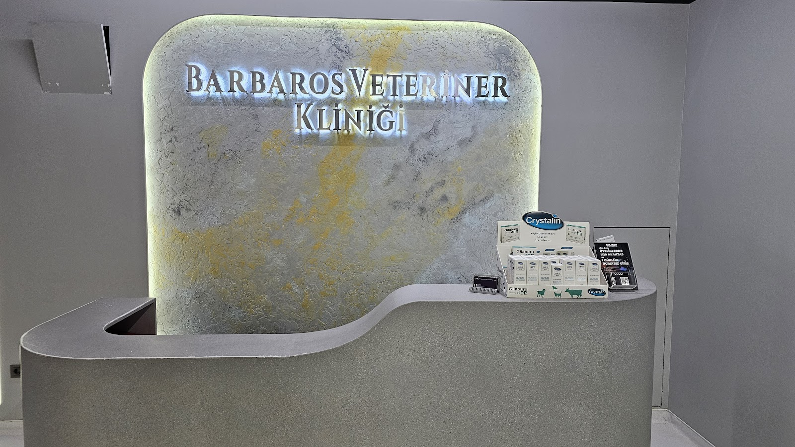
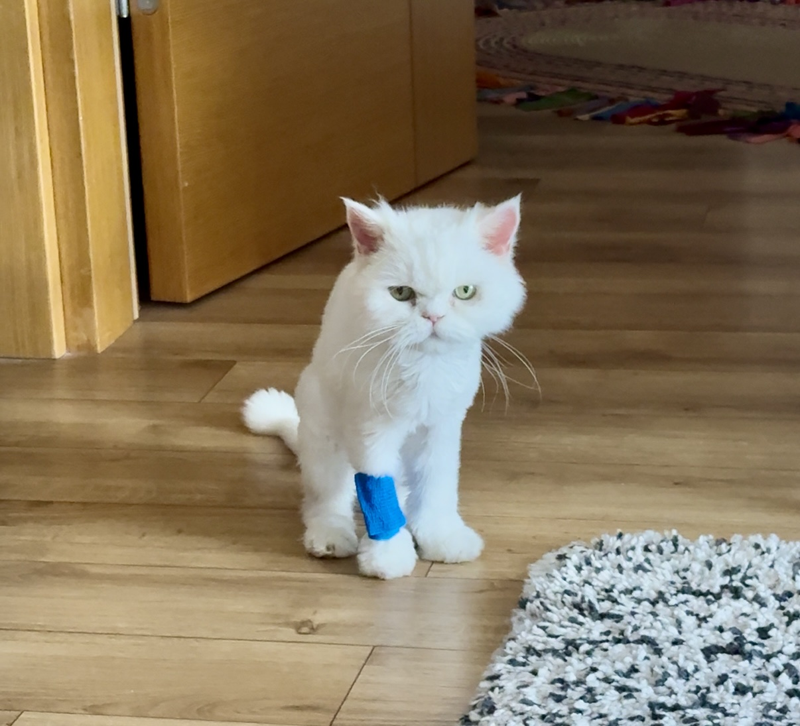
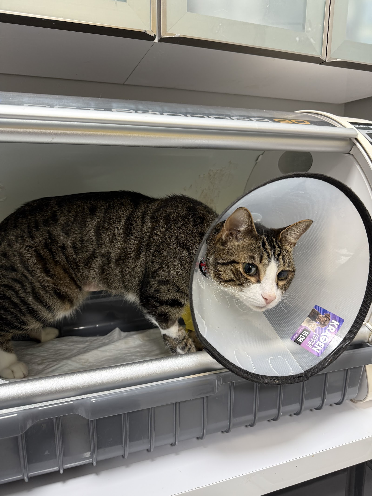

Ataşehir · İstanbul · Veteriner
Ataşehir Barbaros Veteriner Kliniği, kedi ve köpeklerinizin rutin kontrolünden acil durumlarına kadar ilgiyle yanında olur. Sorularınızı dinler, süreci size sade bir dille anlatırız.
Türünü seçin, doğum tarihini girin: karma aşı, kuduz ve parazit uygulamalarının tarihleri çıksın; hepsi tek dokunuşla takviminize hatırlatma olarak düşsün.
Genel takvimdir; kesin aşı programını muayenede hekimimiz belirler.
Belirtileri seçin; beklemeli mi, bugün mü gelmeli, hemen mi aramalı, sade bir dille söyleyelim. Teşhis koymaz, sizi doğru zamanda kliniğe yönlendirir.
Boş saatleri görün, dostunuzun adıyla randevu talebinizi gönderin.
Gün ve saat seçin; talebiniz WhatsApp'tan kliniğe gitsin.
Kedi ve köpeğinizin sağlık durumu muayene edilir, merak ettikleriniz hekimle birlikte konuşulur.
Yaşına ve ihtiyacına uygun aşı ile iç ve dış parazit uygulamaları hekim önerisiyle planlanır.
Acil durumlarda dostunuzun ilk müdahalesi için kliniğimizle iletişime geçebilirsiniz.
Ameliyat öncesinde süreç ve bakım önerileri hekim tarafından size anlatılır.
Evcil dostunuzun kimlik kaydı için mikroçip işlemi klinikte yapılır.
Hekimin gerek gördüğü durumlarda tahlil ve tetkiklerle muayene süreci desteklenir.




Müşterilerimiz, aklına takılan her soruya gece gündüz hızlı yanıt aldıklarını anlatıyor. Hekimimiz Tekin Kafkas'ın ilgisi ve bilgisi sıkça takdir ediliyor.
Kliniğe ilk kez gelenler de yıllardır gelenler de ekibin nazik ve ilgili olduğunu söylüyor.
Gerektiğinde ilgili uzmana ya da göz hastanesi gibi bir merkeze yönlendirmeyi, durumu açıkça anlatarak yaparız.
Aşıdan parazit uygulamasına, kısırlaştırmadan çip işlemine kadar pek çok ihtiyaç aynı klinikte karşılanıyor. Bu sayede dostunuzun geçmişini tanıyan bir ekiple ilerlersiniz.
📍 Nidakule Güney, Barbaros, Mor Sumbul Sokagi NO:7 D:3G, 34750 Ataşehir/İstanbul
🕑 Pzt–Paz 24 saat